Udawalawe National Park
Udawalawe is famous for its large elephant population and open grasslands, offering one of the best wildlife viewing experiences in Sri Lanka.
View Tour
Horton Plains
Horton Plains is a misty highland plateau known for its breathtaking "World's End" viewpoint.
It offers scenic trails surrounded by rare flora and fauna.
View Tour

Yala National Park
Yala National Park is a top wildlife destination known for its leopards, elephants, and beautiful dry-zone landscapes that attract many visitors.
View Tour
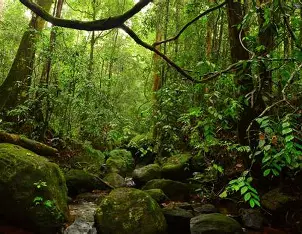
Sinharaja Rain Forest
Sinharaja is Sri Lanka's last primary rainforest, rich with unique plants and animals, making it a paradise for nature lovers.
View Tour
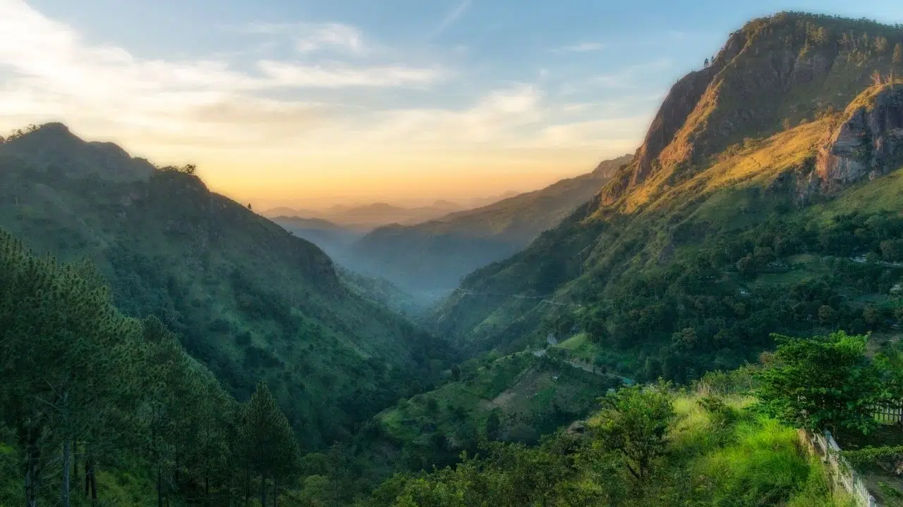
Knuckles Mountain Range
The Knuckles Range offers scenic trails, rare biodiversity, and stunning mountain views ideal for trekking and outdoor exploration.
View Tour
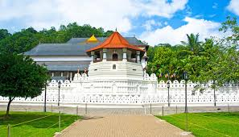
Temple of the Tooth
This temple houses the sacred tooth relic of the Buddha and remains one of the most important religious sites in Sri Lanka today.
View Tour
The Nallur Kandaswami Kovil
Nallur Kovil is a sacred Hindu temple known for its golden architecture and vibrant annual festivals.
View Tour

Dambulla Cave Temple
The Dambulla Cave Temple is the largest and best-preserved cave temple in Sri Lanka, filled with murals and ancient statues that reflect its history.
View Tour
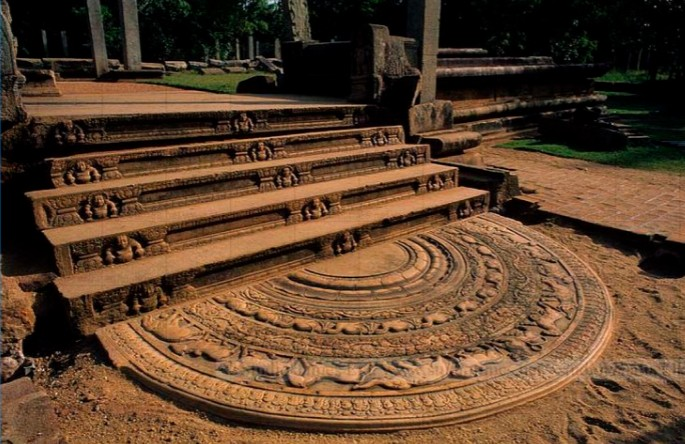
Anuradhapura Sandakadapahana
The Sandakadapahana is an iconic carved moonstone of Anuradhapura, symbolizing the Buddhist cycle of life.
View Tour

Katharagama Shrine
A major pilgrimage site for multiple religions, known for its spiritual atmosphere, traditional rituals, and vibrant cultural heritage.
View Tour

Jaffna Fort
A coastal fort built by the Portuguese and later expanded by the Dutch, offering a fascinating glimpse into colonial history.
View Tour
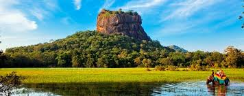
Sigiriya Rock Fortress
Sigiriya is an ancient rock fortress known for its stunning frescoes and engineering brilliance.
The climb reveals breathtaking views and a deep glimpse into Sri Lanka's royal history.
View Tour
The Royal Palace in Polonnaruwa
The Polonnaruwa Royal Palace showcases the grandeur of ancient kings through its impressive stone ruins.
View Tour
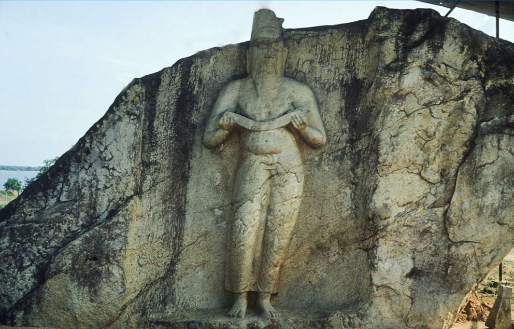
King Parakramabahu Statue
A famed ancient statue believed to depict King Parakramabahu, symbolizing his wisdom and vision for prosperity.
View Tour
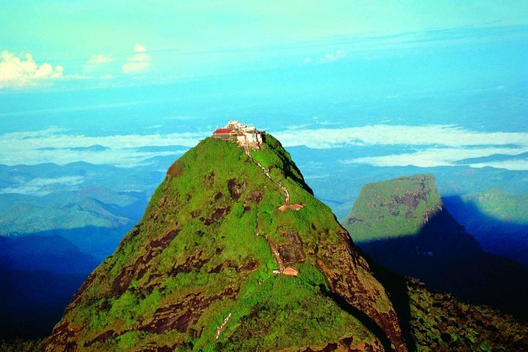
Adam's Peak (Sri Pada)
Adam's Peak is a sacred mountain famous for the footprint at its summit and its long-standing multi-faith pilgrimage tradition.
View Tour

Unawatuna Beach
Offers calm turquoise waters and sandy beaches, perfect for swimming and snorkeling. The coral reefs and seaside activities make it a relaxing destination.
View Tour
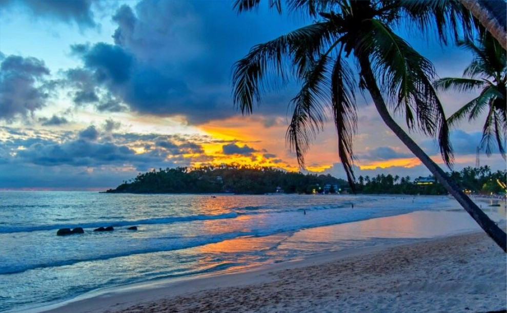
Arugam Bay Beach
Arugam bay is a world-renowned surfing beach with golden sands and relaxing coastal vibes.
It attracts surfers, backpackers, and nature lovers from around the world.
View Tour
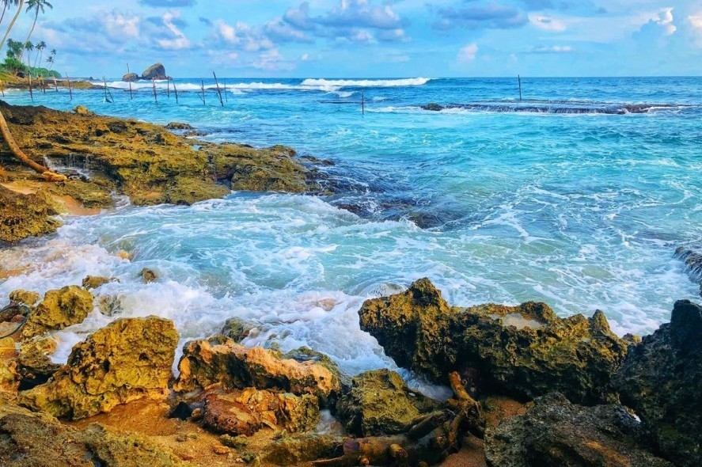
Koggala Beach
Koggala Beach is a quiet and scenic stretch of coastline ideal for calm getaways.
The logoon and nearby stilt fishermen add to its natural charm.
View Tour
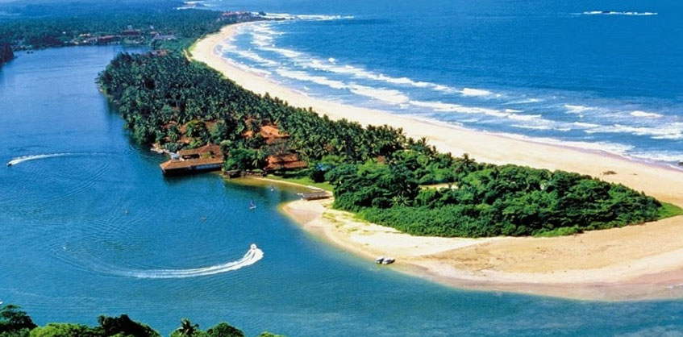
Bentota Beach
Bentota Beach is known for its wide sandy shores and clear waters perfect for water sports.
It is one of Sri Lanka's most popular resort areas for relaxation and adventure.
View Tour

Mirissa Beach
Mirissa is famous for whale watching and golden palm-lined beaches. Visitors can enjoy ocean sunsets, water sports, and the lively coastal atmosphere.
View Tour
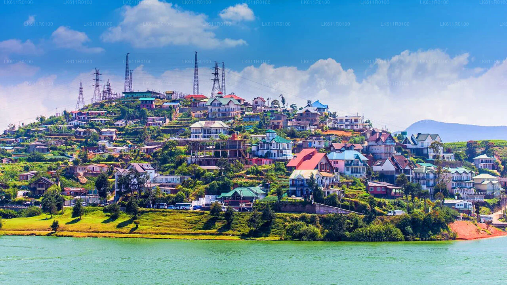
Nuwara Eliya
A scenic town in central highlands, known for its cool climate and extensive tea plantations, which earned it the nickname "Little England"
View Tour
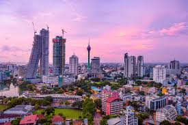
Colombo
Colombo is the island's busy commercial capital, combining modern skyscrapers, colonial buildings, shopping areas, and coastal views.
View Tour

Galle
Galle is home to the historic Dutch Fort, offering colonial-era streets, seaside views, and a unique mix of culture and architecture.
View Tour
Kandy
Kandy is the cultural heart of Sri Lanka, surrounded by mountains and known for the Temple of the Tooth and its deep-rooted traditions.
View Tour
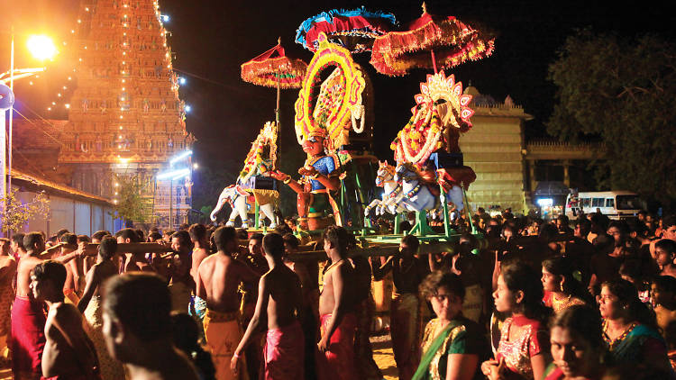
Jaffna
Jaffna is a culturally rich city, known for its historic temples, vibrant markets, and Tamil heritage.
Its local cuisine and traditions attract curious visitors.
View Tour